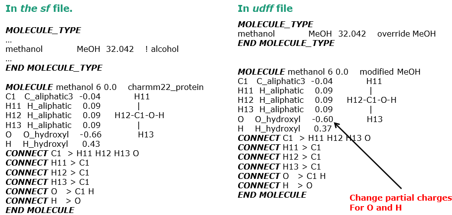
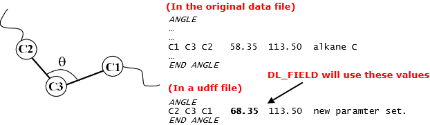

The udff file: 2. Examples¶
In this page, we will be looking at a couple of simple examples how to use a udff file.

Create or modify MOLECULE tempelate
We intend to override a MOLECULE tempelate in a library file. Suppose you want to change the partial charges for methanol in CHARMM22_prot FF. This can be achieved as follows:
{kind=link}
On the left, it shows a portion of the MOLECULE tempelate where the methanol MOLECULE is defined in the library file. On the right, is the same MOLECULE now being redefined in a udff file, with changes to the partial charges to the hydroxyl group.
If the similar MOLECULE_TYPE (the name of the MOLECULE) is located in the library, then DL_FIELD will give the following notification in the dl_field.output file.
..
..
*** Setting up MOLECULE_TYPE database from standard library file (.sf)...
- MOLECULE_TYPE 'methanol' has been overrided by UDFF file:
Standard .sf file: key = MeOH mass = 32.042000
User redefinition: key = MeOH mass = 32.042000
..
..
and ignore the FF information from the library file.
Create or modify potential parameter
Suppose you want to use a more ‘up-to-date’ set of parameters instead of the those supplied in the library, then the redefinition
{kind=link}
will produce the following notification in the dl_field.output file.
..
..
*** Setting up MOLECULE_TYPE database from standard library file (.sf)...
- MOLECULE_TYPE 'methanol' has been overrided by UDFF file:
Standard .sf file: key = MeOH mass = 32.042000
User redefinition: key = MeOH mass = 32.042000
..
..